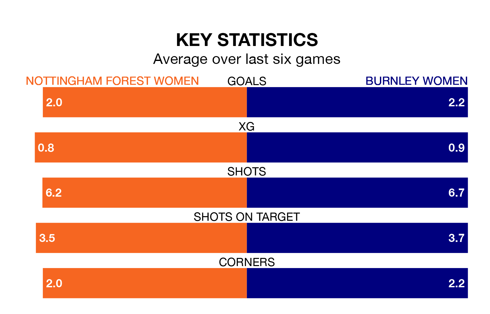

Two of Women's National League Premier Division North's top sides face each other in Sunday's early kick-off, when third-placed Nottingham Forest Women host second-placed Burnley Women.
Nottingham Forest have picked up six wins and two draws from 11 games so far this season, and sit four points below the visitors going into the 2pm match.
Burnley, meanwhile, have won seven and drawn three of 10, picking up 24 points.
With 29 goals in 11 games so far this season, Nottingham Forest are the league's second-highest scorers with 2.6 goals per game. And they are conceding fewer than average, letting in 10 goals at a rate of 0.9 per game.
Burnley are also above average scorers, with 2.5 goals per game, compared to a league average of 1.8. They have conceded 0.8 goals per game.
In the last 10 years, Nottingham Forest and Burnley have played each other on six occasions. They won two each, and they drew twice.
On average, Nottingham Forest scored 2.0 goals and Burnley 1.5 in those matches.
Their last meeting was on September 17, when Burnley won 4-2 at home.
The hosts are in reasonable form in Women's National League Premier Division North, with three wins and two draws from their last six games.
With four wins and two draws over that period, the away side's form is better – they have taken 14 points from 18, compared to Nottingham Forest's 11.
Nottingham Forest's last match was on January 21, a 0-0 draw against Newcastle United Women.
Burnley drew 0-0 with Wolverhampton Wanderers Women last time out, on January 7.
Updated: 09:07 (UTC), 24/01/24